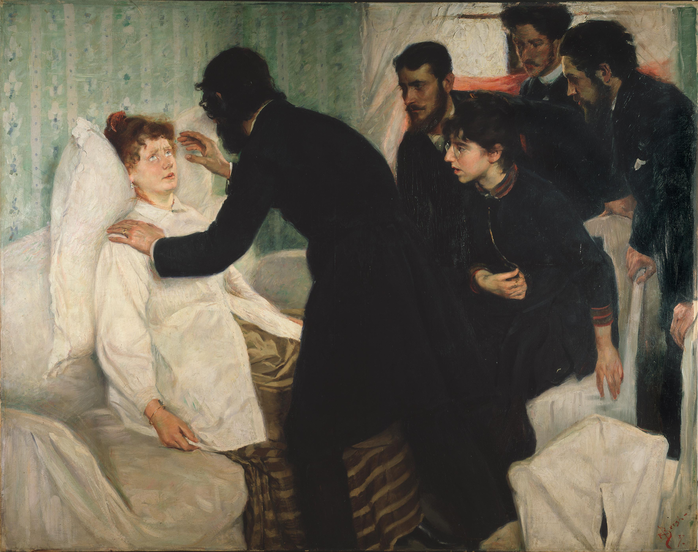

Hypnosis is a state of human consciousness involving focused attention and reduced peripheral awareness and an enhanced capacity to respond to suggestion. The term may also refer to an art, skill, or act of inducing hypnosis.

Hypnotic Séance (1887) by Richard Bergh
Introduction
Hypnosis is a state of human consciousness involving focused attention and reduced peripheral awareness and an enhanced capacity to respond to suggestion. The term may also refer to an art, skill, or act of inducing hypnosis.
Theories explaining what occurs during hypnosis fall into two groups. Altered state theories see hypnosis as an altered state of mind or trance, marked by a level of awareness different from the ordinary conscious state. In contrast, nonstate theories see hypnosis as a form of imaginative role enactment.
During hypnosis, a person is said to have heightened focus and concentration. The person can concentrate intensely on a specific thought or memory, while blocking out sources of distraction. Hypnotised subjects are said to show an increased response to suggestions. Hypnosis is usually induced by a procedure known as a hypnotic induction involving a series of preliminary instructions and suggestion. The use of hypnotism for therapeutic purposes is referred to as "hypnotherapy", while its use as a form of entertainment for an audience is known as "stage hypnosis". Stage hypnosis is often performed by mentalists practicing the art form of mentalism.
Etymology
The term "hypnosis" comes from the ancient Greek word ύπνος hypnos, "sleep", and the suffix -ωσις -osis, or from ὑπνόω hypnoō, "put to sleep" (stem of aorist hypnōs-) and the suffix -is.The words "hypnosis" and "hypnotism" both derive from the term "neuro-hypnotism" (nervous sleep), all of which were coined by Étienne Félix d'Henin de Cuvillers in 1820. These words were popularized in English by the Scottish surgeon James Braid (to whom they are sometimes wrongly attributed) around 1841. Braid based his practice on that developed by Franz Mesmer and his followers (which was called "Mesmerism" or "animal magnetism"), but differed in his theory as to how the procedure worked.
Historical Definitions
The earliest definition of hypnosis was given by Braid[contradictory], who coined the term "hypnotism" as an abbreviation for "neuro-hypnotism", or nervous sleep, which he contrasted with normal sleep, and defined as: "a peculiar condition of the nervous system, induced by a fixed and abstracted attention of the mental and visual eye, on one object, not of an exciting nature."
Braid elaborated upon this brief definition in a later work, Hypnotic Therapeutics.
Therefore, Braid defined hypnotism as a state of mental concentration that often leads to a form of progressive relaxation, termed "nervous sleep". Later, in his The Physiology of Fascination (1855), Braid conceded that his original terminology was misleading, and argued that the term "hypnotism" or "nervous sleep" should be reserved for the minority (10%) of subjects who exhibit amnesia, substituting the term "monoideism", meaning concentration upon a single idea, as a description for the more alert state experienced by the others.
Joe Griffin and Ivan Tyrrell (the originators of the human givens approach) define hypnosis as "any artificial way of accessing the REM state, the same brain state in which dreaming occurs" and suggest that this definition, when properly understood, resolves "many of the mysteries and controversies surrounding hypnosis".[29] They see the REM state as being vitally important for life itself, for programming in our instinctive knowledge initially (after Dement[30] and Jouvet[31]) and then for adding to this throughout life. They explain this by pointing out that, in a sense, all learning is post-hypnotic, which explains why the number of ways people can be put into a hypnotic state are so varied: anything that focuses a person's attention, inward or outward, puts them into a trance.